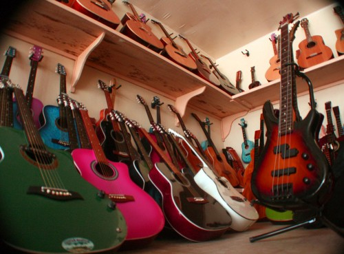

Lapu-Lapu is country’s guitar-making capital
Posted on Thursday, March 7th, 2013 at 7:36 am.
Written by USJ-R MassCom Intern
Guitar makers show the artistry involved in creating the product during a demonstration at the Liberty Shrine in Mactan last year. (Photo by Fritz John A. Menguito)
By Faith Sulib
Lapu-Lapu City, located on the island of Mactan, is highly known as the home of handmade quality guitars.
While a lot of areas in the country also make and create guitars, nothing beats Lapu-Lapu when it comes to quality and craftsmanship.
Aside from their unique designs, Lapu-Lapu guitars are sold at affordable prices. Guitar makers here use narra, jackfruit, or imported wood for their products.
Buyers can even have their designs followed and names painted on the guitars for a more personalized look.

Selling these guitars from Lapu-Lapu would not only mean promotion of the product to the tourists but this is also to showcase and to let them see how artistic and talented Oponganons are. Photo By Fritz John A. Menguito
Filipinos, especially Cebuanos, don’t need to buy imported guitars because they could have something better and these are guitars made in Lapu-Lapu.
Lapu-Lapu’s guitars are also popular with tourists and anyone who buys here not only promotes locally-made goods but also helps advertise the talent and artistry of Oponganons.

Export quality. Hand-crafted instruments.
With skill and talent, and backed-up with tools that are specially made for our instruments, Ferangeli Guitar Handcrafter produces world class handcrafted instruments.
Nice and shiny. Hand buffed instruments like no other.
Excellent sound quality. Try it yourself.
Sources:
Content Source
|

{kind=link}
{kind=link}